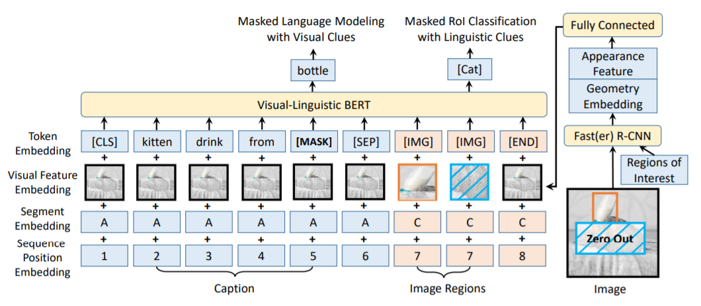

VL-BERT: Pre-training Of Generic Visuallinguistic Presentations¶
简述¶
arXiv 1908.08530
收录于 ICLR 2020
VQA Challenge 2019 #11(Single)
摘要¶
与同类工作的关系¶
LXMERT等模型的作者认为两阶段模型，或者说为视觉、语言分别构建独立的Transformer，之后追加一层跨模态Transformer这样的结构要优于多源输入的单Transformer结构，但我们的研究得出了相反的结论。
该模型的预训练过程与LXMERT等模型有着三个显著的区别：
我们发现LXMERT等模型提出的语句图片关系预测任务（预训练任务之一）对视觉语言的联合表征的预训练过程实际上没有作用。
我们分别在视觉语言数据集和纯文本数据集上进行了预训练，这种预训练被验证是能够提升模型在复杂长句的泛化能力
我们提升了视觉特征的调整过程。为了避免视觉线索在ROI掩膜分类任务上的泄露，我们直接在原图像而非其卷积后的特征上进行掩码操作
模型结构¶
)
该模型对BERT做了如下修改：
加入了一种新的用于整合视觉特征的元素
提出了一种新的用于视觉特征嵌入的方法
模型的基本框架与BERT类似，是一个能够对依赖关系进行建模的多层双向Transformer编码器。BERT与该模型的区别是其只能处理语句，而该模型能够同时把视觉和语言的元素作为输入。
视觉和语言的元素分别是指图像上的兴趣区域与输入语句的子句。兴趣区域即可以是物体检测模型得到的标定框也可以是数据集内某一任务的注释。
输入元素的具体内容如图，[CLS]开头[END]结尾，[SEP]作为句间或句与图之间的分割
短语嵌入：本模型与BERT保持一致，使用了基于3万个词的词典的WordPiece嵌入。我们给视觉元素专门定义了一个[IMG]作为对应的短语。
视觉特征嵌入：以视觉外观特征和视觉几何嵌入作为输入的全连接层的输出被链接到每个输入元素上。前者由Fast RCNN提取，与视觉有关的话用特定区域的特征向量，与视觉无关的话用全图的特征向量；后者则是用于标记在图上的位置和宽高，用四维向量的高维表征表示（原理见Han Hu, Jiayuan Gu, Zheng Zhang, Jifeng Dai, and Yichen Wei. Relation networks for object detection. ）
分割嵌入：三类，A、B分别表示输入语句的第一句和第二句，C表示输入图像的兴趣区域。
序列位置嵌入：与BERT相同，每个输入元素都有一个可习得的序列位置嵌入，表示了它在输入序列中的顺序。但视觉元素之间因为没有顺序，使用了相同的相同位置嵌入。
预训练过程¶
Conceptual Captions 数据集包含图片和相应的描述短语，但语句太短内容简单，为了避免过拟合还需要其它数据集
- BooksCorpus 数据集用于训练长复杂句（纯文本）这两个数据集被混合（1:1），分别用于预训练以下任务：
使用视觉线索的掩膜语言建模任务：与Bert中的掩膜语言建模很相似，区别在于该模型把视觉线索也作为输入之一。该训练过程主要用于建立语句之间的依赖关系，以及将视觉和语言内容相标齐。
使用语言线索的掩膜兴趣区域分类任务：即上一任务的对偶任务，将ROI区域按0.15比例随机掩码掉，任务目标是依据语言线索预测被掩码的兴趣区域的分类标签。为了防止视觉特征的泄露，在对兴趣区域掩码之前，原图上相应位置的像素值被置零。
总之，前一个数据集提高了视觉-语言内容的对齐，而后一个数据集提高了复杂长句的理解，同时在这两个数据集上进行预训练的策略对下游任务的性能有着较大的提升。
模型微调¶
按照格式给模型提供数据然后端到端进行训练即可。针对不同的任务，需要修改相应的损失函数和训练策略。
实验结果¶
在VQA任务上，该模型表现仅次于在超大规模VQA数据集上进行预训练的LXMERT（毕竟该模型并没有在任何VQA数据集上进行预训练）。这说明基于图像描述和语料库进行预训练的模型在应用到VQA任务上时依然存在着一定的鸿沟。但其实这样的表现已经相当不错了
（该模型实验时使用的整体框架与BUTD相同）
消融研究¶
预训练策略提升了模型在所有任务上的表现，但不同任务的提升程度并不相同。同时，我们发现如果增加了语句-图像关系预测这一任务（在LXMERT中存在），在所有任务上的精度都会下降。我们猜测这是因为引入了不匹配的图片和描述语句作为负例会妨碍其它任务的训练。